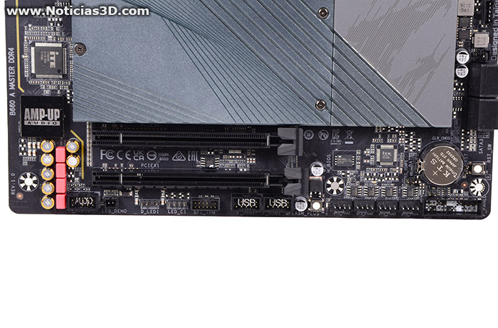

Nueva B660 AORUS MASTER DDR4
El chipset B660 llega para quienes no buscan overclock o muchos lanes para conectar una buena cantidad de dispositivos y componentes. En términos generales son placas base menos ambiciosas con el resto de especificaciones, lo que no quita que existan placas muy potentes con las que mover sobradamente un Core i9, incluso un 12900KS, lo más top de esta generación. Decimos que es un chipset para quienes no quieren overclock aunque, hay modelos de gama alta, y no tan alta, con capacidad para separar clocks de BCLK, pudiendo subir de vueltas sin tirar de multiplicador, incluso en modelos no K.

Esta placa nos recuerda estéticamente a la Z690 AORUS PRO. Posee un gran bloque de disipación para VRM, renunciando a las aletas Fins-Array del modelo MASTER con chipset Z690, y que no es una bestia, es lo siguiente, una placa "overkill" para entusiastas u OC extremo. Este modelo B660 es igualmente una placa muy capaz, como veremos en el siguiente apartado, donde os describiremos todo lo que ofrece "por dentro".
En estas instantáneas podemos ver una construcción en tonos grises con un PCB en color negro, con una disipación marcada por cortes diagonales de izquierda a derecha descendentes, para dar dinamismo a su diseño. AORUS graba también con líneas diagonales su logotipo con un águila en la zona del bloque de aluminio encargado de refrigerar el chipset. En el bloque izquierdo para disipación de VRM vemos el nombre del fabricante por triplicado y "una buena dosis de fantasía", con el AORUS en medio que cuenta con iluminación RGB configurable. En la esquina inferior-derecha tenemos 4 conectores SATA, probablemente más que suficientes para la gran mayoría, en cajas que acostumbran a ofrecer espacios para dos discos de 3,5" y otros 2 de 2,5".
En el resto de conectividad interna para tarjetas y discos, la placa dispone de 2 NVMe 4.0 x4 y un tercer conector M.2 para disco PCIe 3.0 x4, todos ellos disipados por un bloque de aluminio, y con el principal M.2, gestionado directamente por el procesador, que cuenta además con thermalpad en la cara inferior. Es un poco perogrullo pero, si adquirís esta placa, recordad quitar la pegatina azul para que este refuerzo de disipación haga su efecto. Todas estas conexiones M.2 resultan en un decremento de conectores PCIe para tarjetas, con 2 ranuras extra al margen de la primera para GPU x16 4.0, que son 3.0 x4 (compartida con un M.2 3.0) y 3.0 x1, a pesar de su longitud x16.